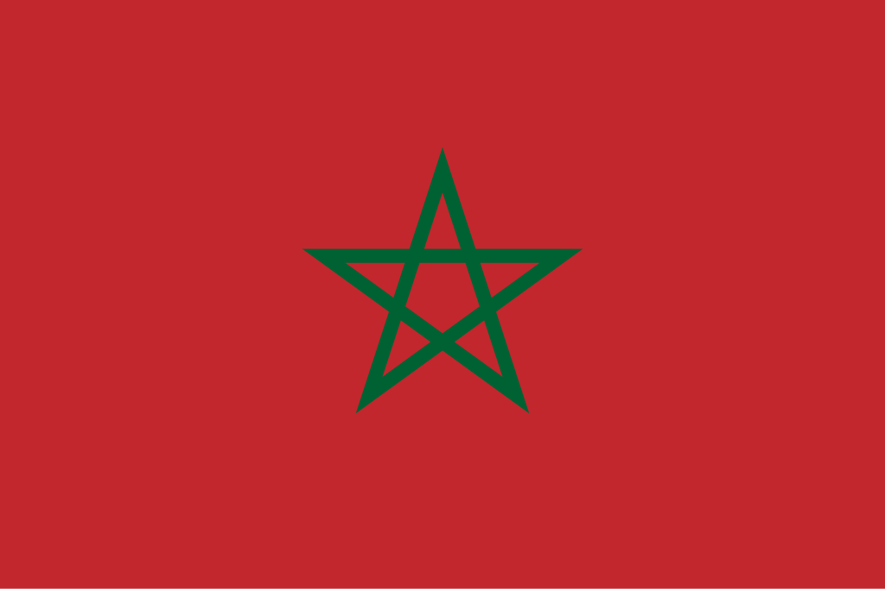

Marrocos
 O Marrocos, oficialmente Reino de Marrocos, é um país localizado no norte da África, banhado pelo Oceano Atlântico e pelo Mar Mediterrâneo, com capital em Rabat e cidades importantes como Casablanca e Marrakech. Com cerca de 710 mil km², o país apresenta grande diversidade geográfica, incluindo planícies costeiras, montanhas do Atlas e desertos do Saara. O Marrocos possui uma população de aproximadamente 37 milhões de habitantes, composta majoritariamente por árabes e berberes, com pequenas comunidades de outros grupos étnicos. Historicamente, o país foi palco de diferentes dinastias, desde os Idríssidas no século VIII até os Alaouitas, que governam desde o século XVII. Atualmente, o Marrocos é uma monarquia constitucional, membro da ONU, União Africana, Liga Árabe e da União do Magrebe Árabe, destacando-se por sua economia diversificada, turismo crescente, e forte influência cultural e histórica na região.
História
A história do Marrocos é marcada por uma contínua interação entre povos indígenas berberes, invasores árabes, europeus e impérios islâmicos. Os primeiros habitantes conhecidos foram os berberes, que formaram diversos reinos independentes no território. No século VII, a chegada dos árabes introduziu o islã e a língua árabe, moldando profundamente a identidade religiosa e cultural do país. Ao longo dos séculos, diferentes dinastias islâmicas, como os Almorávidas, Almóadas e Merínidas, consolidaram o poder central e expandiram o território, tornando o Marrocos um importante centro cultural, religioso e comercial do Magrebe.
Durante o século XIX e início do XX, o Marrocos foi pressionado pelo colonialismo europeu, resultando na divisão do país em protetorados francês e espanhol em 1912. A luta pela independência foi marcada por resistência política e diplomática, culminando na obtenção da independência em 1956, quando o rei Mohammed V restaurou a soberania nacional. Desde então, o Marrocos tem se destacado por sua estabilidade relativa na região, modernização econômica e preservação de suas tradições culturais, mantendo fortes laços com países africanos, europeus e árabes.
Cultura
A cultura marroquina é uma rica fusão de heranças berbere, árabe, africana e europeia, refletindo a diversidade histórica do país. O islã é a religião predominante, influenciando a arquitetura, os costumes e a vida social. A música tradicional, como o chaabi e o gnawa, desempenha papel central na cultura popular, enquanto festivais religiosos e culturais celebram a herança local e internacional. A gastronomia é famosa pela mistura de especiarias e ingredientes, com pratos típicos como cuscuz, tagine, pastilla e chá de hortelã. O artesanato é outro ponto forte, com cerâmicas, tecidos, tapetes e joias que combinam técnicas ancestrais e estética moderna.
A arquitetura marroquina é famosa por mesquitas, palácios, medinas e riads, refletindo influências islâmicas e berberes. Cidades como Marrakech, Fez e Meknès preservam esses elementos históricos, atraindo turistas de todo o mundo. A língua oficial é o árabe, com o berbere (tamazight) também reconhecido constitucionalmente. O francês é amplamente usado nos negócios, na educação e no governo, tornando o Marrocos um país multilíngue. Escritores como Tahar Ben Jelloun e artistas contemporâneos ajudam a projetar a cultura marroquina no cenário internacional.


Clima
O Marrocos apresenta grande diversidade climática, influenciada pelo Atlântico, Mediterrâneo, cadeias montanhosas do Atlas e regiões desérticas do Saara. Na costa, predomina clima mediterrâneo, com verões quentes e secos e invernos amenos e úmidos. Nas regiões montanhosas, especialmente no Atlas, há invernos frios e nevascas ocasionais, enquanto os verões são quentes e secos. No interior e no sul, o clima é semiárido a desértico, com temperaturas elevadas e escassez de chuvas. Essa diversidade climática favorece a agricultura em algumas áreas e influencia a distribuição populacional e econômica do país, criando contrastes marcantes entre regiões férteis e áridas.
Biodiversidade
A biodiversidade do Marrocos é influenciada por seus variados ecossistemas: florestas mediterrânicas, montanhas, planícies e desertos. Nas regiões costeiras e montanhosas, há espécies de mamíferos, aves e flora típicas do Mediterrâneo, enquanto nas áreas desérticas predominam espécies adaptadas à aridez, como répteis, camelos e arbustos resistentes à seca. O país possui áreas protegidas, como o Parque Nacional de Toubkal e o Parque Nacional de Souss-Massa, que preservam ecossistemas frágeis e espécies ameaçadas, incluindo leopardos e aves migratórias. A conservação da biodiversidade marroquina é essencial tanto para a pesquisa científica quanto para o turismo sustentável.


Cidades
As cidades marroquinas combinam tradição e modernidade, sendo centros econômicos, culturais e turísticos importantes. Rabat, a capital, concentra instituições governamentais e universidades, enquanto Casablanca é o principal polo econômico e industrial. Marrakech, famosa por sua medina e souks, é um dos destinos turísticos mais visitados do país. Fez é reconhecida por sua herança histórica e intelectual, com antigas medinas e centros de ensino islâmico. Outras cidades, como Meknès, Agadir e Essaouira, apresentam características únicas, refletindo a diversidade histórica, geográfica e cultural do Marrocos.